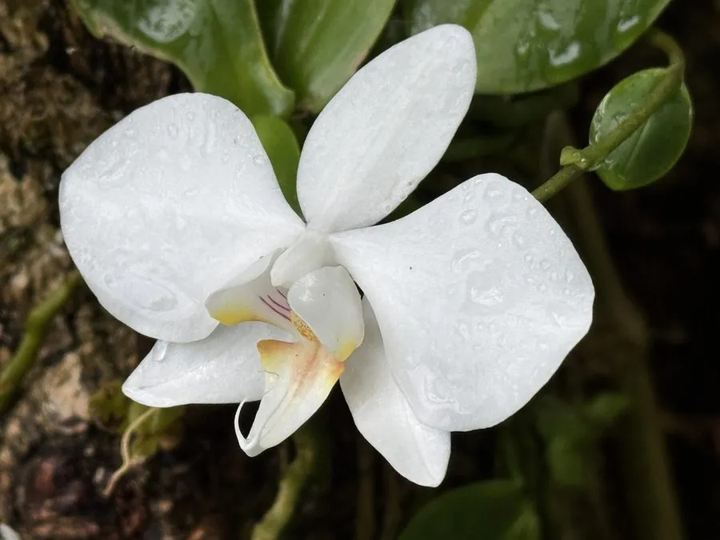

花卉与草本 · 植物界
蝴蝶兰 Phalaenopsis aphrodite

兰科附生草本，花朵形似翩飞的蝴蝶，花期长达数月，是年宵花市的主角，原产菲律宾与台湾南部的热带雨林。
- 分类
- 门被子植物门纲木兰纲目天门冬目科兰科属蝴蝶兰属
- 栖息环境
- 热带雨林的树干与岩石上，喜温暖、湿润、半阴
- 地理分布
- 原产菲律宾与台湾南部，现世界各地广泛栽培，中国南方大量生产
- 保护级别
- 暂无评估；CITES 附录Ⅱ（兰科植物）
物种志
蝴蝶兰为兰科蝴蝶兰属附生草本，无假鳞茎，茎短，叶片肥厚、革质，长圆形，交互排列于茎基。根系粗壮，气生根可附着于树皮或岩石并吸收空气中的水分。花葶自叶腋抽出，长 30–60 厘米，着花数朵至十余朵，花大，形似蝴蝶，有白、粉、紫、黄及斑纹，花期 1–6 月。
蝴蝶兰原产菲律宾和台湾南部等热带地区，附生于雨林树干上，喜温暖、湿润、通风和半阴的环境，忌强光暴晒和积水。它的气生根表面有海绵状的根被，能吸收空气中的水分；栽培常用水苔或树皮作基质。蝴蝶兰单株花期可长达 2–3 个月，是春节年宵花市的主要花卉；花谢后剪去花葶上部，部分植株还能再次抽花。
形态与习性
- 株高花葶长 30–60 厘米，着花数朵至十余朵
- 花期1–6 月，单株花期可达 2–3 个月
- 果期花后结蒴果
- 光照喜半阴散射光，忌强光暴晒
- 水分喜湿润，空气湿度宜 60%–80%
- 土壤以水苔、树皮等透气基质附生栽培
- 繁殖分株、组培繁殖
- 主要用途年宵花、室内盆栽、切花
趣味知识
- 蝴蝶兰的花形似蝴蝶，单株花期可长达 2–3 个月。
- 它是附生植物，气生根表面的海绵状根被能吸收空气中的水分。
- 蝴蝶兰的学名种加词意为“阿佛洛狄忒”，即希腊神话中的爱与美之神。
- 花谢后从花葶下部剪断，部分植株还能再次抽出花芽。